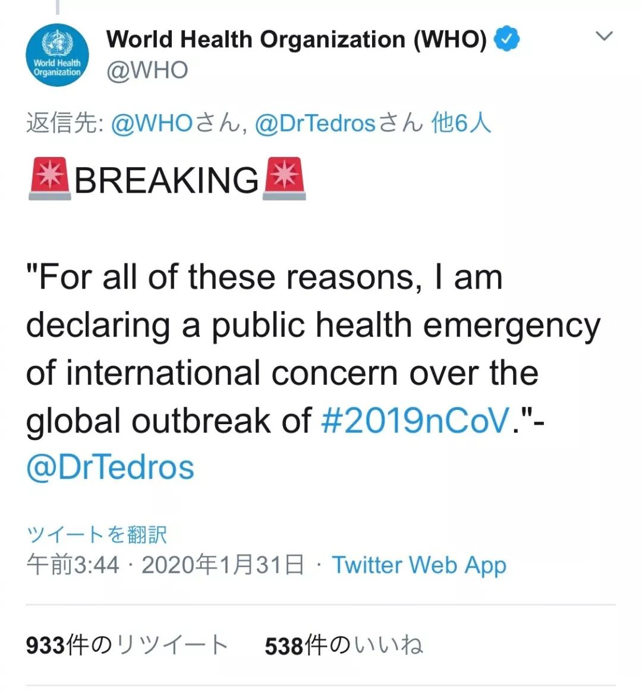
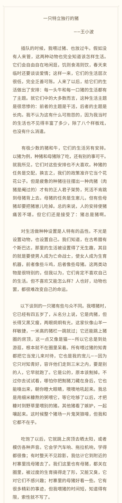
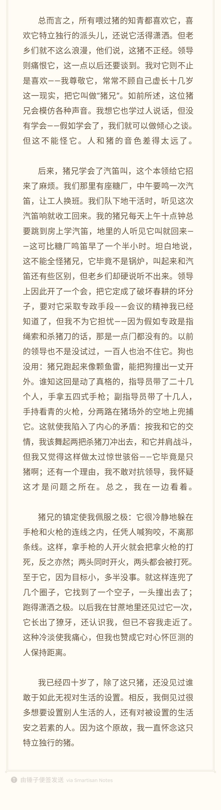

风暴中心：我的家离华南海鲜市场很近｜约稿
原文链接 备份链接 编者按 这篇约稿来自一名化名为“平安”的武汉大学生，记述了她从返乡、封城，再到过年所经历的种种。这个特殊的春节，绝望与希望同在，寂静与喧嚣并存。身处「风暴中心」，她的心理有什么样的变化？让我们一起来看看她的五日。 “ …

2020年1月31日。
农历正月初七。
武汉封城第九天。
天门封城第八天。
凌晨，世界卫生组织（WHO）召开新闻发布会，向全球通报：中国本次新冠肺炎疫情构成国际关注的突发公共卫生事件（PHEIC）。WHO官员还说：“We must remember that these are people,not numbers。” 记得北野武在日本“311地震”过后讲过类似的话：「 灾难并不是死了两万人这样一件事，而是死了一个人这件事，发生了两万次。」
太阳照常升起的一天，半夜一头野猪在武汉的二环上放肆奔跑。
祭上小波旧文




原文链接 备份链接 编者按 这篇约稿来自一名化名为“平安”的武汉大学生，记述了她从返乡、封城，再到过年所经历的种种。这个特殊的春节，绝望与希望同在，寂静与喧嚣并存。身处「风暴中心」，她的心理有什么样的变化？让我们一起来看看她的五日。 “ …
原文链接 备份链接 2020年1月26日。 农历正月初二。 武汉封城第四天。 天门封城第三天。 耐撕。车也不让上路了，大家一起家里蹲。以前不是传着这样一个段子嘛，说给你一个房间，有食物有手机有wifi，就是不能出门，看你能待多久？万万没想 …
原文链接 备份链接 从火车站回来的路变成三个人，车还很少，我们一路畅行。丁刚把汽车音响声音放到最大，是伍佰的《被动》，“爱你越久我越被动……” 文 | 萧辉 2020年1月23日凌晨1点42分，我在微信朋友圈里写了一句“OH, MY …
原文链接 备份链接 3月23日。 封城第61天。我从初一（元月25日）开始在微博作记录，比封城晚了两天。所以，这是第59篇。 今日大晴。很舒服的天气。下午终于把狗送到了宠物医院。它的皮肤病再次发作，全身溃烂，不治疗也是不行了。我自己手指也 …
原文链接 备份链接 本文由娱志The Review原创出品 华东师范大学传播学院学生娱评号 转载需申请授权 作者 | Moe，苏博 编辑 | 华实 导语 “自2020年1月23日10时起，全市城市公交、地铁、轮渡、长途客运暂停运营；无特殊 …